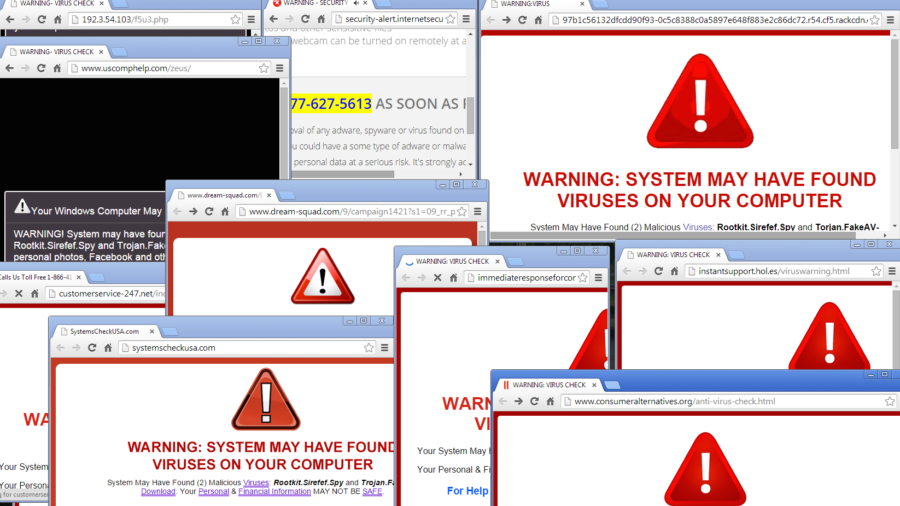
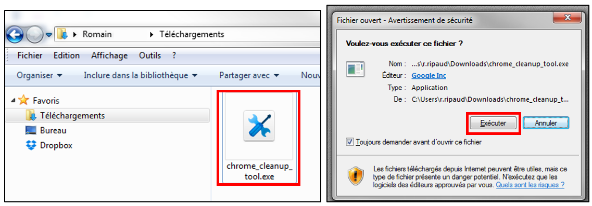
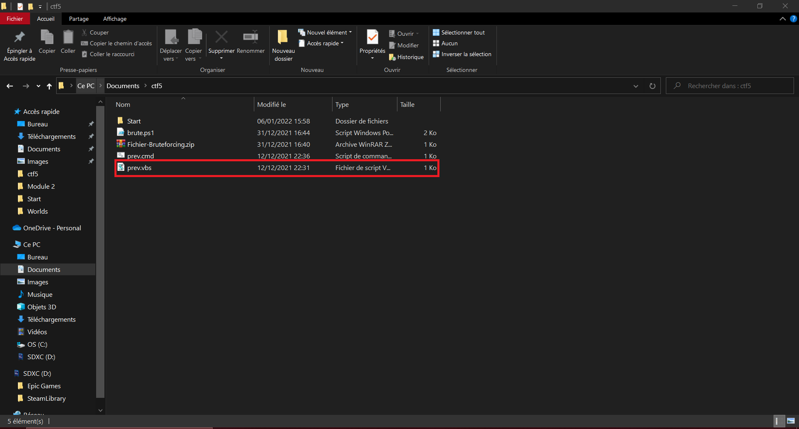

Les cookies sont des trackers de fichiers « texte » qui permettent de connecter les utilisateurs et les sites Web. Ils font office de carte d’identité en ligne, aidant un site Web à se souvenir de vos choix, activés et vos préférences.
Les cookies jouent un rôle dans presque tous les sites Internet de la mémorisation des informations de connexion et des articles du panier en ligne, à l’aide d’entreprises pour créer des publicités ciblées.
Les cookies sont nécessaires, ils vont permettre de se connecter à un site et de garder en mémoire nos préférences. Cependant, une personne malveillante pourra les utiliser pour vous localiser à une vingtaine de mètres près si vous n'utilisez pas de protections, pour autoriser une ouverture de pop-up en continue ou même pour venir se coller dans les fichiers de votre ordinateur même après suppression afin de recueillir vos données.
Lorsque vous liker un post sur Twitter, Instagram ou encore Facebook, il s'agit d'un cookie, c'est un type différent. Celui-ci prend certaines informations, il est alors facile de faire passer un simple clique pour une banalité alors qu'enfaite, l'on peut / ou l'on veut, vous cibler avec différentes attaques, ou vols d'informations qui sont parfois même presque invisibles.
Nos conseils pour se protéger des attaques malveillantes de cookies :
- Ne pas utiliser la mémorisation de vos mots de passes sur site web, cela permet que personnes ne puissent utiliser votre ordinateur ou périphérique internet.
- Ne pas utiliser les mêmes identifiants.
- Effacez vos cookies en supprimant vos données de navigations(comme la supression de l'historique de navigation).
- Installer un antivirus et/ou configurer votre pare-feu.
Exercice "Test d'un cookie" :
Voici un cookie sous forme de pub comme vous pourrez avoir sur un site web tout à fait normal:
Il s'agit d'un simple cookie, mais si le but d'un site web est de faire de la pub cela peut vite inonder votre navigateur avec de nombreux pop-up de publicités.

Les téléchargements.

Le téléchargement consiste à sauvegarder des fichiers depuis internet sur votre ordinateur. Vous allez voir ce que je vous devriez savoir à ce sujet : définition, différentes méthodes et techniques, différences entre téléchargement illégal ou légal, risques de sécurité…
Sur internet, il existe plusieurs raisons de télécharger des fichiers potentiellement dangereux, par exemple, le téléchargement illégal. Les téléchargent des films ou cracks, sont des mines d'or pour les hackers qui prendront un malin plaisir à cacher des virus dans ceux-ci.
D'autres moyens existent, on peut citer les malwares joints à un email (pièce jointe ou fishing) ou à une page web. Il est important de vérifier les informations:
- Du mail (un vrai mail aura des informations "justes")
- De la page web (certificat https (sécurisé) et http (non sécurisé) dans l'url, exemple : https://www.google.fr ou http://www.siteExemple.fr).
Nos conseils pour éviter de télécharger un fichier malveillant et s'en protéger :
- Méfiez-vous des liens, n'ouvre pas n'importe quoi.
- Ne téléchargez pas les pièces jointes de mails douteux, d'inconnus.
- Soyez-sûr d'avoir un antivirus actif, même s'il s'agit de Windows Defender (antivirus par défaut Windows).
- Ne pas enregistrez vos informations(mots de passes, codes bancaires...)
- Essayez d'avoir une sauvegarde de vos fichiers importants sur un disque dur extenre ou une clé USB.
- Utilisez la double authentification, si un pirate hack votre mot de passe par un malware, il se retrouvera bloqué.
Exercice "Fichier dangereux" :
Voici un petit programme qui va simplement lancer une erreur windows. Il est créé de façon à afficher une fois une boucle d'erreur, cependant dans un cas concret, si vous télécharger un fichier qui peut paraître normal, celui-ci peut installer en même temps, un script ou un programme (exemple ci-dessous) qui se lance à chaque démarrage en boucle afin de potentiellement bloquer un ordinateur par exemple.

Ce type de fichier est assez simple et il permet à un hacker d'incorporer des virus, malwares et programmes plus avancés, qui seront capable de vous forcer à réintialiser votre périphérique (votre PC) ou même endommager ses composants.
Lancer ce programme (prev.vbs), cliquez ci-dessous et essayez de voir si ce fichier est un virus ou non .Cliquez-ici
Exercice "Code HTML" :
Le but de cet exercice est de vous montrer en quel langage de programmation s'affiche une page web,souvent les pages sont en HTML/CSS Vous pouver pour voir comment fonctionne une page web , clique droit "inspecter l'Élément ou CTRL + SHIFT + C